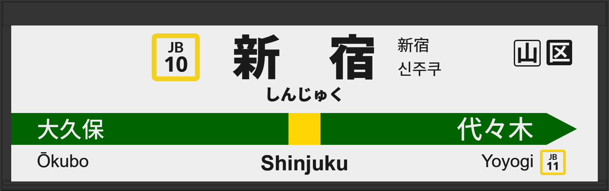

| ←大久保 | ■ 中央・総武線(各駅停車) | 代々木→ |
|---|
1996年12月に初期型ATOS放送を導入。
1999年2月に11番線の発車メロディが「素朴な鐘の音」から「風と共に V2」に変更される。
2000年1月に11番線の発車メロディが「メロディー」に変更される。
2000年2月に14番線の発車メロディが「素朴な鐘の音」から「airly」に変更される。
2007年3月に11番線から13番線へ、14番線から16番線に改番。
2013年11月に常磐改良型に更新される。
2020年1月に宇都宮改良型に更新され、津田英治氏から田中一永氏に交代。
2023年11月に16番線の声優が田中一永に変更されたが、その日に戻される。
2024年10月に13番線の発車メロディが「メロディー」から「JRE-IKST-003-2」へ、16番線は「airly」から「JRE-IKST-003-1」に変更。
| 13 | ■ 中央・総武線(各駅停車) 千葉方面 |
13番線接近放送 13番線発車メロディ（JRE-IKST-003-2） |
放送は「」です。 |
|---|---|---|---|
| 16 | ■ 中央・総武線(各駅停車) 三鷹方面 |
16番線接近放送 16番線発車メロディ（JRE-IKST-003-1） |
放送は「」です。 |
| 16 | ■ 中央・総武線(各駅停車) 三鷹方面 |
16番線接近放送 16番線発車メロディ（airly） |
放送は「」です。 田中一永氏による放送に変更されていました。 |
|---|
| 13 | ■ 中央・総武線(各駅停車) 千葉方面 |
13番線接近放送 13番線発車メロディ（メロディー） |
放送は「」です。 常磐改良型で、津田英治氏による放送でした。 |
|---|---|---|---|
| 16 | ■ 中央・総武線(各駅停車) 三鷹方面 |
16番線接近放送 16番線発車メロディ（airly） |
放送は「」です。 常磐改良型でした。 |
| 13 | ■ 中央・総武線(各駅停車) 千葉方面 |
13番線接近放送 13番線発車メロディ（メロディー） |
放送は「」です。 旧型でした。 |
|---|---|---|---|
| 16 | ■ 中央・総武線(各駅停車) 三鷹方面 |
16番線接近放送 16番線発車メロディ（airly） |
放送は「」です。 旧型でした。 |
| 11 | ■ 中央・総武線(各駅停車) 千葉方面 |
11番線接近放送 11番線発車メロディ（メロディー） |
放送は「」です。 改番前です。 |
|---|---|---|---|
| 14 | ■ 中央・総武線(各駅停車) 三鷹方面 |
14番線接近放送 14番線発車メロディ（airly） |
放送は「」です。 改番前です。 |
| 14 | ■ 中央・総武線(各駅停車) 三鷹方面 |
14番線発車メロディ（素朴な鐘の音） |
発車メロディが変更前でした。 |
|---|
| 11 | ■ 中央・総武線(各駅停車) 千葉方面 |
11番線発車メロディ（風と共に V2） |
発車メロディが変更前でした。 |
|---|
| 11 | ■ 中央・総武線(各駅停車) 千葉方面 |
11番線接近放送(各駅停車 千葉行) 11番線接近放送(各駅停車 津田沼行) 11番線発車メロディ（素朴な鐘の音） |
文面が継ぎ接ぎでした。 発車メロディが変更前でした。 |
|---|---|---|---|
| 14 | ■ 中央・総武線(各駅停車) 三鷹方面 |
14番線接近放送 |
放送は「各駅停車 三鷹行」です。 文面が継ぎ接ぎでした。 |